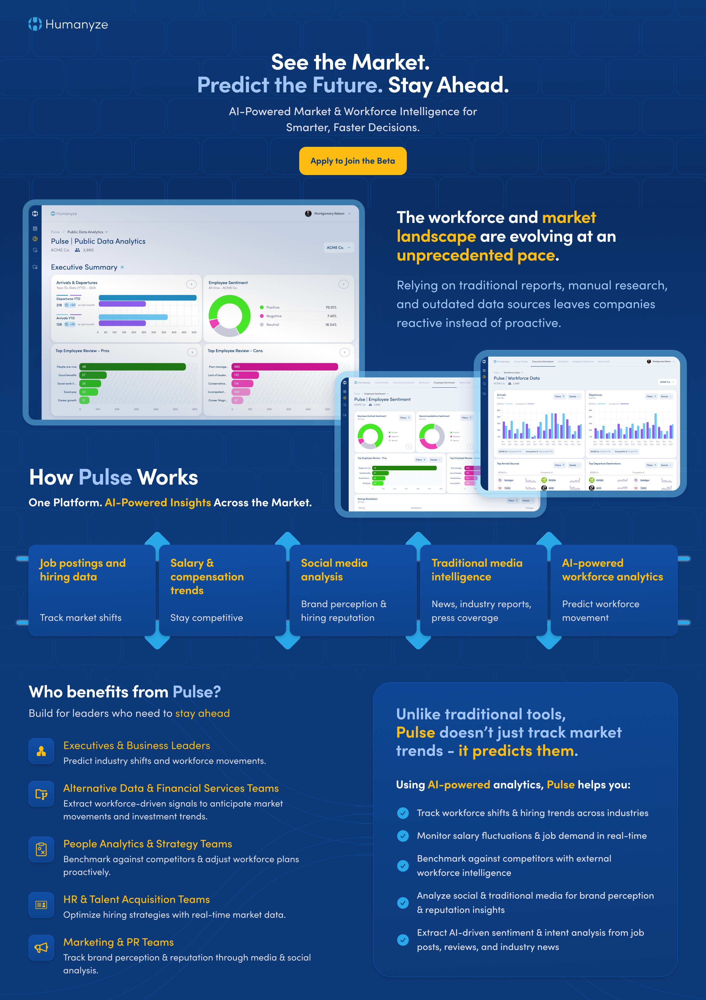

Humanyze Pulse
AI-Powered Market & Workforce Intelligence for Smarter, Faster Decisions. Comprehensive social media analytics, sentiment tracking, and competitive intelligence platform delivering real-time insights across multiple data sources.
Platform Overview
One platform that scrubs popular social media feeds for business and then compares your data; sentiments, activity, social media posts and platforms you exist on

The Challenge
Transforming workforce and market intelligence for the AI era
The workforce and market landscape are evolving at an unprecedented pace. Traditional reports, manual research, and outdated data sources leave companies reactive instead of proactive. Organizations need real-time intelligence to:
- Track workforce shifts and hiring trends across industries
- Monitor brand perception and reputation through social media
- Analyze salary and compensation trends in real-time
- Benchmark against competitors with external workforce intelligence
- Extract AI-driven sentiment and trend analysis from job posts, reviews, and industry news
Humanyze Pulse was designed to address this critical need by providing a unified platform that integrates multiple data sources and delivers actionable insights powered by AI. Existing platforms exist, but are bulky and require heavy costs. Humanyze tokenizes the information you request, so the cost is at a fraction of the competitors.
Key Features & Capabilities
Comprehensive analytics and intelligence tools for data-driven decision making

Social Media Analytics Dashboard
Comprehensive real-time monitoring of social media activity with engagement tracking, sentiment analysis, and platform breakdown. Track 12K+ posts, monitor engagement rates, and analyze sentiment scores across all major social platforms including Reddit, LinkedIn, X (Twitter), Instagram, and TikTok.
Impact & Results
Delivering measurable value through intelligent analytics
Who Benefits from Pulse?
- Executives & Business Leaders: Predict industry shifts and workforce movements with real-time intelligence
- Alternative Data & Financial Services Teams: Extract workforce-driven signals to anticipate market movements
- People Analytics & Strategy Teams: Benchmark against competitors and adjust workforce plans proactively
- HR & Talent Acquisition Teams: Optimize hiring strategies with real-time market data
- Marketing & PR Teams: Track brand perception and reputation through media and social analysis